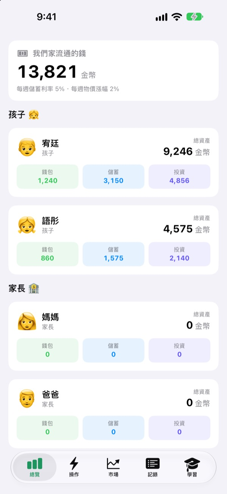
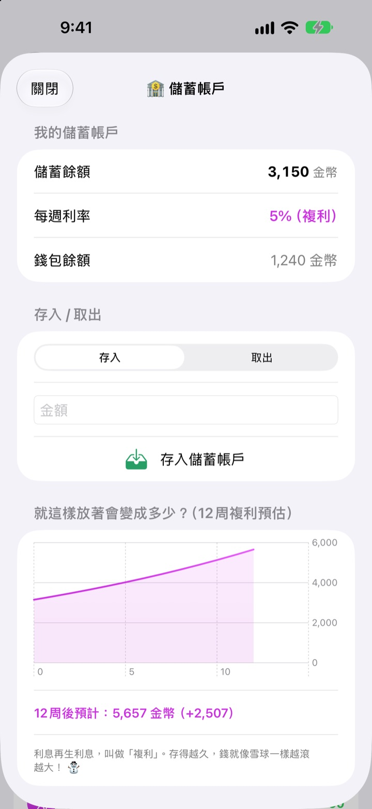
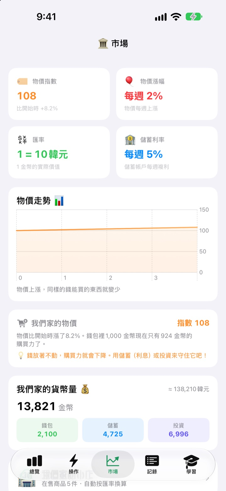
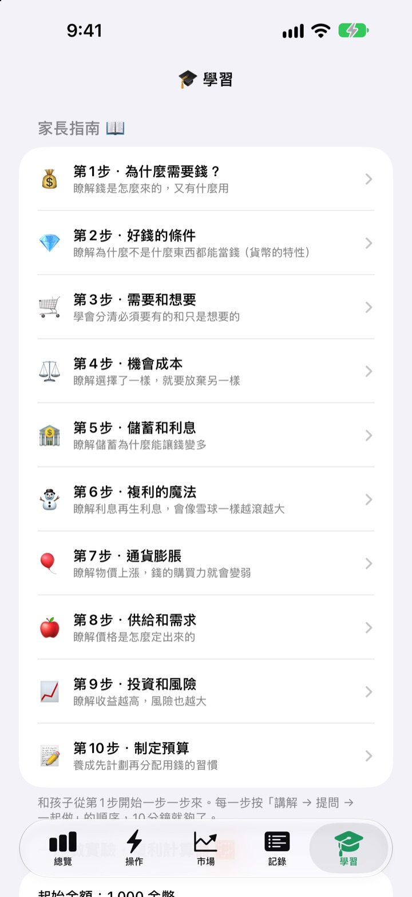

發零用錢的日子
變成一堂理財課
爸媽是家裡的中央銀行，孩子是銀行的客戶。孩子領到的是你們家自己的貨幣，可以買點心，看著儲蓄裡的利息一點一點變多，也能在模擬基金的漲跌中體會投資的心跳。
所有功能免費，完全不會用到真錢。

1,000 金幣，你會放在哪裡？
同樣的 1,000 金幣，分別放在錢包、儲蓄和三檔基金裡。每次往後跳一週，看看它們各自怎麼變化。規則和 App 裡完全一樣。
「存起來錢會變多」，孩子真的懂嗎？
利息、複利、通貨膨脹，越解釋越像是離孩子很遠的事。在茁壯零用錢裡，孩子自己賺、自己花、自己等。等他發現上週存的錢多了利息，下一次的零用錢就會主動存進儲蓄。
看得見耐心的回報
存進儲蓄的錢每週以複利計息。利率由爸媽決定，圖表還會告訴孩子：一直不動的話，12 週後會變成多少。
幾天沒打開也沒關係，下次打開 App 時，累積的每一週利息都會一次補上。

看見物價怎麼吃掉錢包
市場頁把家裡的物價指數、通膨率、利率、貨幣量和基金價格放在同一個畫面。物價越漲，就越看得出錢包裡的 1,000 金幣能買的東西少了多少。
放著不動的錢會縮水，存起來或拿去投資的錢能守住價值，孩子看數字就明白。

十個值得一起聊的話題
家長指南分十步帶你和孩子聊：為什麼需要錢、需要和想要、機會成本、儲蓄和利息、複利、通貨膨脹、投資和風險，最後學會做預算。
還有複利計算器和物價實驗計算器，改改數字就能一起看到結果。

三個步驟就能開始
- 1
幫貨幣取名字
豆豆、星星、金幣，全家喜歡什麼就叫什麼。
- 2
設定家長 PIN
4 位數字。只有知道它的人，才能發零用錢或修改銀行設定。
- 3
加入家人
加入孩子和爸媽，發出第一筆零用錢，就可以開始了。
功能在哪裡
- 總覽
- 一眼看到每位家人的錢包、儲蓄和投資
- 操作
- 發放／扣除零用錢、商品條碼、新增商品、邀請孩子、孩子手機模式、銀行設定（需要家長 PIN）
- 市場
- 物價指數、通膨率、匯率、儲蓄利率、貨幣量、基金價格
- 記錄
- 每一筆錢的進出，可依日期、成員或類型查看
- 學習
- 十步家長指南、複利計算器、物價實驗計算器
- 🐢 烏龜穩健基金
- 每天波動很小，慢慢穩穩往上爬
- 🐰 兔子成長股
- 有漲有跌，但整體持續成長
- 🚀 火箭冒險股
- 可能一飛衝天，也可能大幅下跌
初始設定是每週 5% 的儲蓄利率和每週 2% 的通膨率，兩者都能在家長模式的銀行設定裡修改。通膨率設為 0%，物價就不會變動。
所有功能免費
免費
- 家裡專屬的貨幣，以及用 PIN 鎖住的家長模式
- 發放和扣除零用錢、我們家的小店、條碼付款
- 每週以複利計息的儲蓄
- 三檔附報酬圖表的模擬基金
- 市場頁和依日期整理的收支紀錄
- 十步家長指南和兩個計算器
- 孩子手機模式和 iCloud 同步
支持開發者
- 可以在家長模式的銀行設定裡，隨心送上一筆小小的贊助
- 贊助不會解鎖任何功能，送不送 App 都一樣好用
沒有廣告，沒有訂閱。贊助按鈕只在家長模式裡，孩子永遠不會看到購買按鈕。
常見問題
會用到真錢嗎？
不會。App 裡的貨幣和每一筆交易都是虛擬的，只用來學習，不會連到任何真實的銀行帳戶、信用卡或現金。
怎麼在孩子的手機上看到同一本家庭帳本？
登入同一個 iCloud 帳號的裝置會自動同步家庭帳本。請到「設定 > Apple 帳號 > iCloud」確認 iCloud 已開啟。在操作頁的「邀請孩子」裡，可以產生 QR 碼邀請，讓孩子用相機掃描。不使用 iCloud 的話，資料只會留在那一台裝置上。
孩子手機模式是什麼？
把孩子的手機變成專屬於他的畫面。孩子只看得到自己的錢包、投資、記錄和學習內容，要離開必須輸入家長 PIN。
忘記家長 PIN 怎麼辦？
PIN 只儲存在裝置上，連開發者也無法找回。刪除後重新安裝 App 就能重新設定，但原有的資料也會一起清除。
儲蓄利息怎麼計算？
每週自動以複利把利息加進儲蓄餘額。利率在家長模式中設定，錯過的週數會在下次打開 App 時一併結算。
基金價格跟真實市場連動嗎？
不會。基金價格是 App 裡每天變動一次的練習資料，風險越高的基金漲跌越大。它們都不是真實的金融商品。
為什麼物價會上漲？
為了讓孩子體會通貨膨脹，家裡的物價指數每週會小幅上漲。漲幅可以在家長模式的銀行設定裡調整，設為 0% 就會停止。把我們家的小店裡點心和玩具的價格也跟著調高一點，效果會更明顯。
怎麼刪除所有資料？
刪除 App 會清除儲存在裝置上的資料。已同步到 iCloud 的資料，請前往「設定 > Apple 帳號 > iCloud > 管理儲存空間」，刪除本 App 的資料。
家裡的資訊會被傳送出去嗎？
不會。不需要註冊，所有資料只儲存在你的裝置和你自己的 iCloud 帳號中。開發者只會收到你在家長模式裡主動傳送的意見回饋，以及匿名的使用統計和當機報告。
支援哪些裝置？
搭載 iOS 17.0 或以上版本的 iPhone。
有疑問、遇到問題，或者有好點子？歡迎寫信到 leeo@kakao.com。附上裝置型號和 iOS 版本，我們能更快幫上忙。